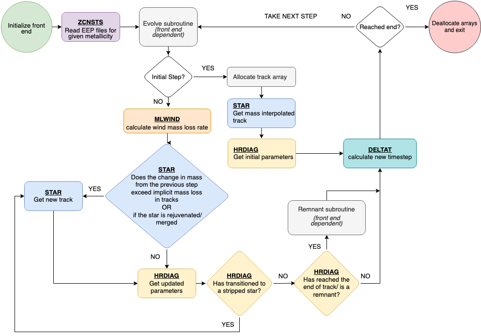

Package contents
All the programs and subroutines are written in Modern Fortran.
The METISSE package contains two types of files in the source (src) directory:
1. SSE specific subroutines
METISSE has been developed as an alternative to SSE (Hurley et al. 2000) and, therefore, contains similar subroutines as SSE. The following subroutines replicate the behaviour of the SSE subroutines externally, with similar names and input/output variables.
METISSE_zcnsts.f90 - Controls metallicity (Z) related part of the package.
METISSE_star.f90 - Find relevant tracks from the input set and interpolate in mass to get a track of a given mass.
METISSE_hrdiag.f90 - Interpolate within the new track to determine stellar parameters at a given age. Also, compute the evolutionary phase of the star including the remnant phases and their properties.
METISSE_deltat.f90 - Calculate the time steps depending on the stage of evolution
METISSE_mlwind.f90 - Derive the mass loss through stellar winds.
METISSE_gntage.f90 - Determine the age of a giant star after merger or rejuvenation
2. Modules and other files
The following Fortran modules contain more general data structures and subroutines specific to METISSE that can be accessed by SSE-specific subroutines as required.
track_support.f90 – Contains general data structures and functions needed throughout the program.
interp_support.f90 – Contains functions required for interpolation
remnant_support.f90 – Contains functions needed to calculate properties of remnant phases
z_support.f90 – Together with METISSE_zcnsts, it reads all input namelists and files, including EEP files, and sets Z parameters and other metallicity-based functions.
sse_support.f90 - contains subroutines to calculate SSE-specific quantities.
In addition to the above modules, METISSE also has:
METISSE_miscellaneous.f90 - Contains miscellaneous subroutines needed by METISSE to work in standalone mode or otherwise. (Ideally, these should be packed in a module but cannot be, as Fortran 77 does not know how to use modules.)
It contains:
alloc_track.f90 - allocate the track object.
dealloc_track.f90 - deallocate the track object and arrays within.
initialize_front_end - Inform METISSE what code is using it.
set_star_type - set star type to rejuvenated before calling star.
A combination of these files is used depending on how METISSE is being used.
In the standalone mode
main_metisse.f90 - Main program for running metisse. Can only evolve single stars. Reads the input files, and sets up relevant parameters and data structures before evolving stars of given masses. evolv_metisse.f90 - controls the evolution of each star and writes output to files.
assign_commons_main.f90 - assign values for variables used in METISSE from SSE_input_controls.
As part of other codes
assign_commons_xyz.f90 !to assign common variables when METISSE is used with other code say ‘xyz’
comenv_lambda.f90 get appropiate ZAMS radius and calculate common envelope lambda
Flowchart
Here is a flowchart describing the workflow of METISSE:
